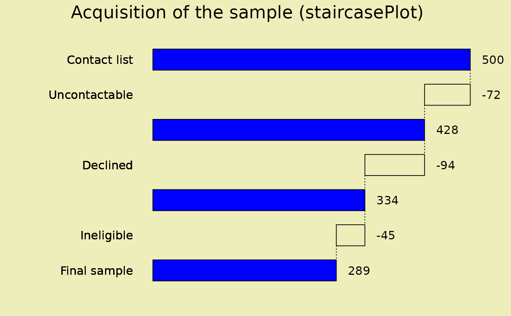

Display a staircase plot
staircasePlot.RdDisplays a plot showing a sequence of changing totals and increments as successive linked bars.
Arguments
- heights
vector of numeric values or a matrix or data frame with at least two columns. The first column must be numeric and the second may be numeric or logical.
- totals
A vector of logicals or zero/non-zero values indicating whether the corresponding height is a total (TRUE) or an increment (FALSE).
- labels
An optional vector of labels for the bars.
- halfwidth
Half of the width of a bar as a proportion. See Details.
- main
A title for the plot.
- mar
Margins for the plot. Defaults to 10 on the baseline axis, 3 on the top and 1 on the other two sides.
- stair.info
A list of arguments for the bars including color(s) for the bars representing successive totals, and increments and the border color.
- bg.col
The background color for the plot.
- direction
Direction in which the bars should be presented. See Details.
- las
Orientation for the bar labels. See par.
- display.height
Whether to display the totals and increments at the upper ends of the bars. Defaults to TRUE.
- stagger
Whether to stagger the labels to avoid overlap.
- cex
The usual character expansion value.
- prefix
A prefix to the numbers displayed next to the bars (e.g. $).
- suffix
A suffix as for prefix (e.g. %).
- ...
arguments passed to plot.
Details
Displays a plot representing successive changes in counts or values. For example, if a research study attempts to contact a certain number of people and some cannot be contacted, some decline to participate, some are ineligible, the final sample will be smaller than the initial contact list. The first value will be the total of attempts, there will be a number of decrements, and the last value will be the actual sample. There may be intermediate totals specified. This produces a visual display of the sampling procedure. See the example.
The bars are placed at integer values on the axis representing the succession of counts or values. The width of the bars is determined by the argument halfwidth. This defaults to 0.3, meaning that the bar extends 0.3 to each side, so that the proportion of bar to space is 0.6 to 0.4. The succession of bars is determined by the direction argument. The default is "e" (east), meaning that the first bar is at the left of the plot and subsequent bars are placed to the right. The other three possibilities follow the conventional compass layout.
The prefix and suffix arguments allow the user to specify units for the numbers displayed next to the bars. If a single value is passed, all numbers will get the same prefix or suffix. Different prefixes or suffixes for each number can be passed as vectors.
The getFigCtr function is called to center the plot title in the figure region as the plot area is typically off center.
Examples
sample_size<-c(500,-72,428,-94,334,-45,289)
totals<-c(TRUE,FALSE,TRUE,FALSE,TRUE,FALSE,TRUE)
labels<-c("Contact list","Uncontactable","","Declined","","Ineligible",
"Final sample")
staircasePlot(sample_size,totals,labels,
main="Acquisition of the sample (staircasePlot)",
total.col="gray",inc.col=2:4,bg.col="#eeeebb",direction="s")
#> Warning: "total.col" is not a graphical parameter
#> Warning: "inc.col" is not a graphical parameter
#> Warning: "total.col" is not a graphical parameter
#> Warning: "inc.col" is not a graphical parameter
#> Warning: "total.col" is not a graphical parameter
#> Warning: "inc.col" is not a graphical parameter
